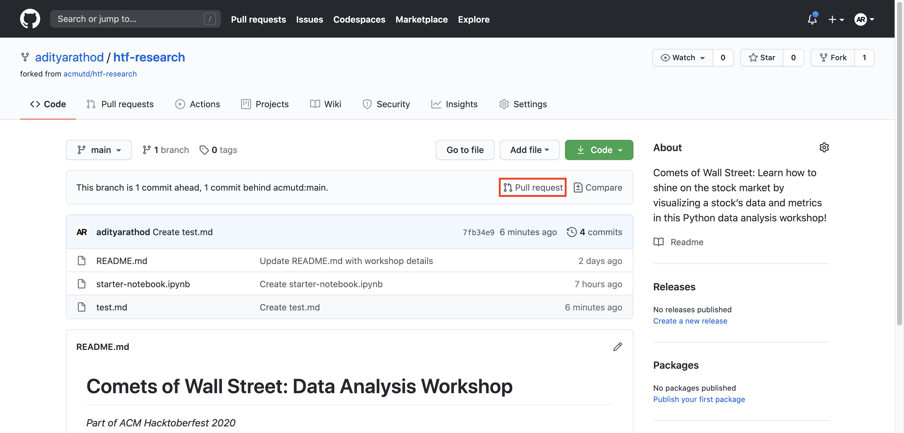
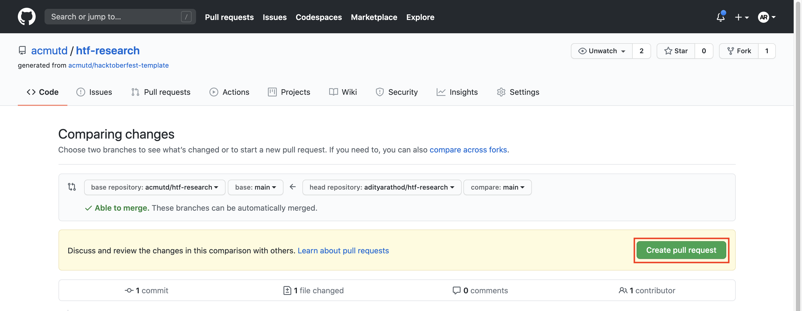
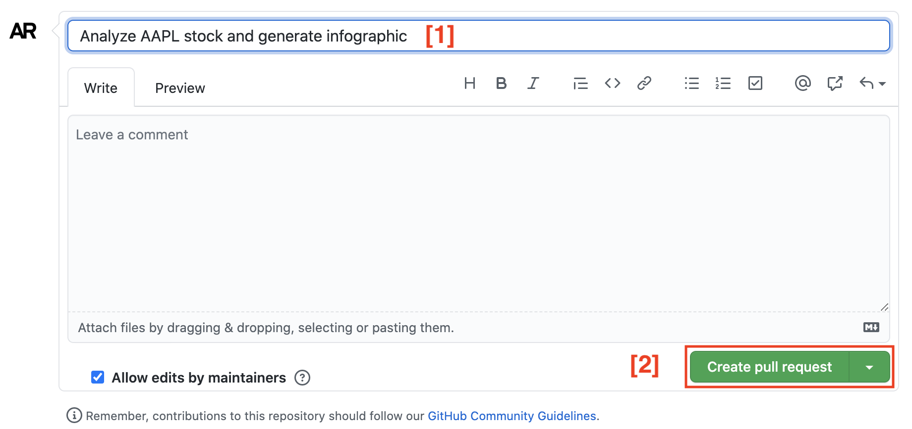

In your local copy of the respository, rename both your notebook and infographic to have the name of the stock ticker you’re doing.
Put the infographic in the stocks directory, and the notebook
in the notebooks directory.
Commit and push to your fork.
Next, navigate to your fork in the browser (for me it’s
https://github.com/adityarathod/htf-research, yours should be
similar minus the username part).
Click the little “pull request” button:

Click “create pull request” again:

Title your PR in the exact same format, replacing “AAPL” with the stock you analyzed and then click Create pull request (description is optional):

This will create a PR into the main repository! Wait for it to be approved by us.
Once approved, it should show up on https://hacktoberfest.digitalocean.com/profile. This counts as 1/4 pull requests!